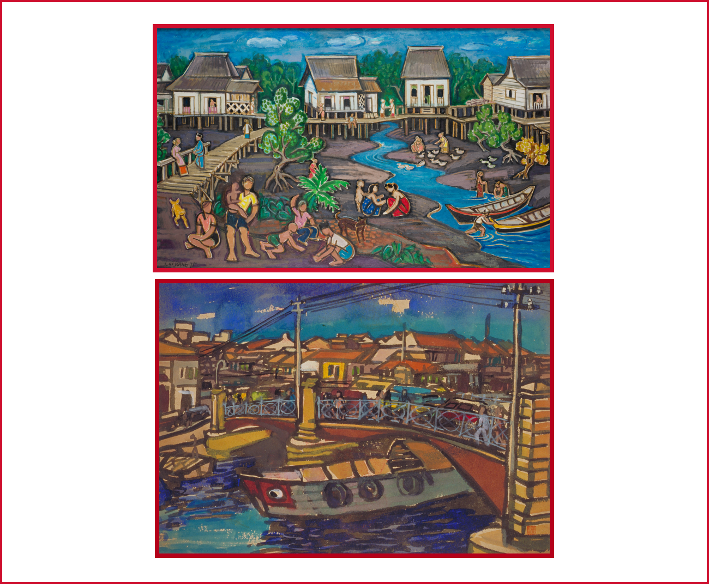

For the best experience, please rotate your phone vertically.

How to Play?
Keep your eyes on the odd one out. Pick it out when the shuffles stops.
game instructions
Mountain/River
Liu Kang
Liu Kang is one of the most important pioneer artists in Singapore and a key figure of the Nanyang style of painting. Mountains are a recurring subject for Liu and there are a few such paintings in the National Collection.
Singapore River
Chen Chong Swee
Chen Chong Swee, one of the artists who shaped the development of Nanyang school, depicts a familar scene, Singapore River, in his own unique style: the house, bridge and bumboats are heavily outlined, and together with the bright, pure colours lend the artwork a cartoon-like effect.
Life by the River
Liu Kang
Life by the River portrays a typical scene of local village life in the 1970s near Pasir Panjang, located in the western part of Singapore. It was painted by Liu Kang, one of the most important pioneer artists in Singapore and a key figure of the Nanyang school of painting.